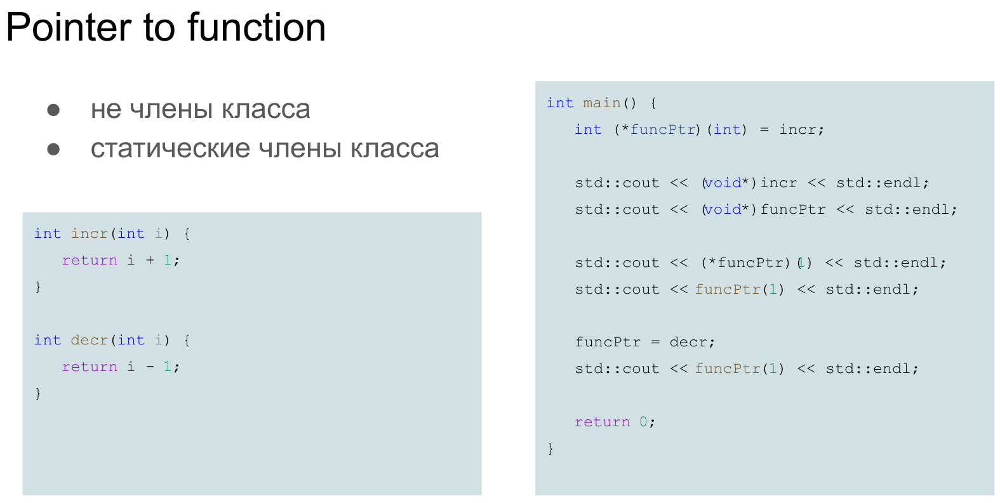
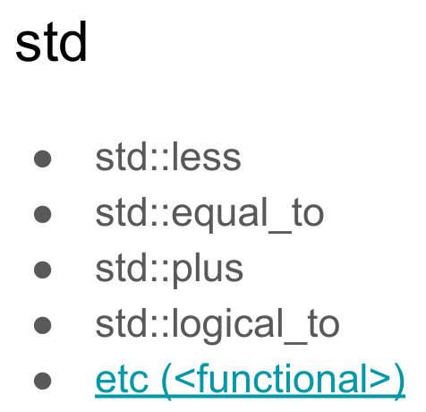
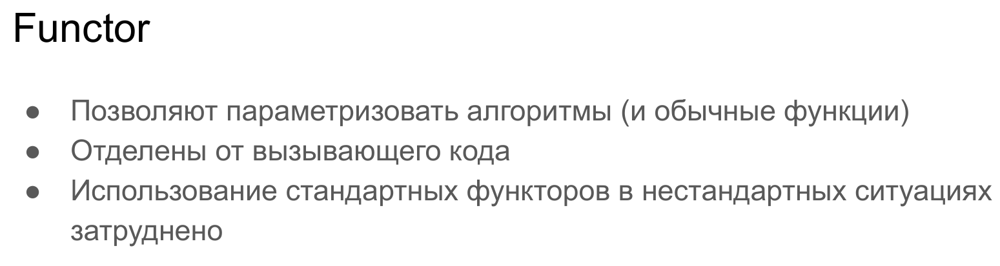
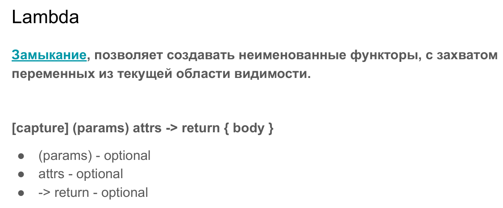
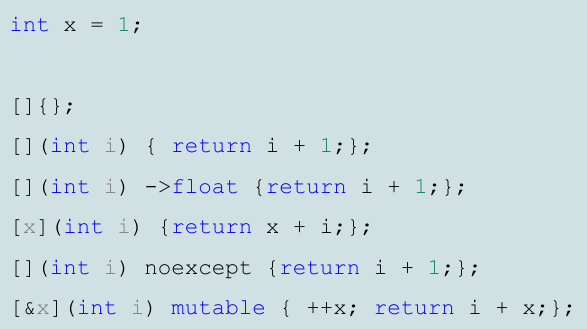
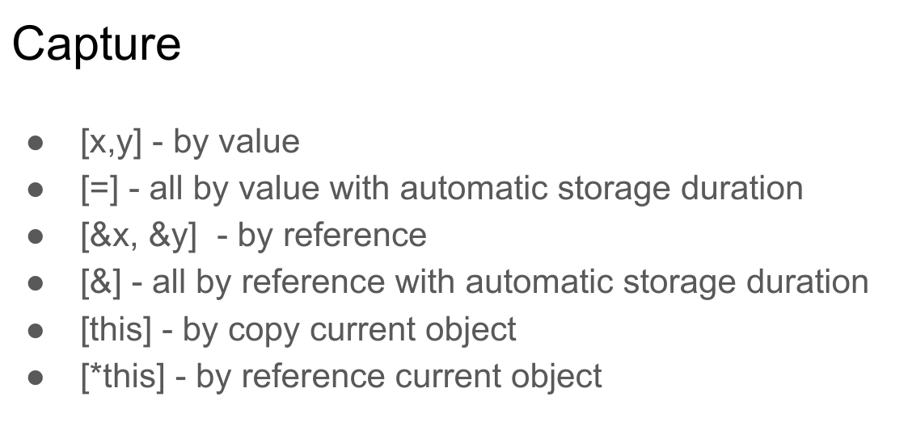

Функторы и лямбда-выражения
Теория, примеры и иллюстрации по теме.
lambda
functor

функтор
указатель на функцию int (*func)(int, int)


Lambda (C++11)

int main() {
auto printer = [](const std::string& str) {
std::cout << str << '\n';
};
printer("hello");
}как функтор лямбду можно передавать
std::vector<int> tmp = {1, 2, 5, 0};
std::sort(tmp.begin(), tmp.end(), [](int a, int b) {return b < a;});можно использовать другие переменные из скоупа
int i = 1;
int j = 2;
auto cmp = [&i, &j](int a, int b) {return b < a + i + j;};какие лямбды могут быть

ps: Mutable - ключевое слово, позволяющее изменять члены данных в const-объектах.

std::invoke — это шаблонная функция из библиотеки <functional> (начиная с C++17), предназначенная для унифицированного вызова любых «вызываемых объектов» (функций, лямбд, указателей на методы или члены класса) с заданными аргументами. Она устраняет различия в синтаксисе вызова, позволяя писать универсальный код.